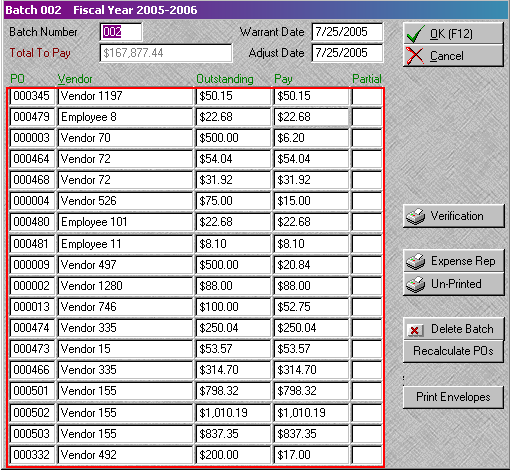

|
Working With Grids |
Top Previous |
|
A grid is a list of detail records inside a main record. A grid allows the user to view, modify and add detail records without ever leaving the main record. Grids are most commonly used in KTS in the ????.
When all grid details are full, if additional lines are needed, the page up and page down keys will move between pages of details.
Sometimes the alignment on a grid will behave oddly. This usually happens on amount fields. The "normal" odd behavior is a number aligning to the right when it is initially entered, and then aligning to the left when the field is clicked on. This is normal behavior for a grid, and should not cause alarm.
An example of a grid is shown inside the red box below.
 |